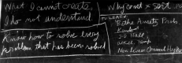

home
plans

Richard Feynman's blackboard at the time of his death, 1988.
blog
The curse of dimensionality in nonlinear filtering
Covariance matrix, moment of inertia, and metric tensor
Pontryagin's maximum principle
Poisson's equation
Spherical harmonics
Dynamical modeling and control of quadrotor
Pyramid star identification technique
re-creation
Simultation of two-gyro gravity-gradient attitude control system
Numerical Integration of the Barotropic Vorticity Equation
study
On Governors
by James Clerk Maxwell
On the stability of the motion of Saturn's rings
by James Clerk Maxwell
A New Approach to Linear Filtering and Prediction Problems
by R.E. Kalman
Extrapolation, Interpolation, and smoothing of stationary time series
by Norbert Wiener
On the hypotheses Which lie at the bases of geometry
by Brenhard Riemann
Almost global asymptotic trajectory tracking for fully-actuated mechanical systems on homogeneous Riemannian manifolds
by Welde and Kumar
A classification of immersions of the two-sphere
by Stephen Smale
question
How does the stastistical properties of a vector change when we normalize the vector?
Sensitivity of the torque-compensated linear attitude control to the knowledge of moment of inertia and angular velocity.